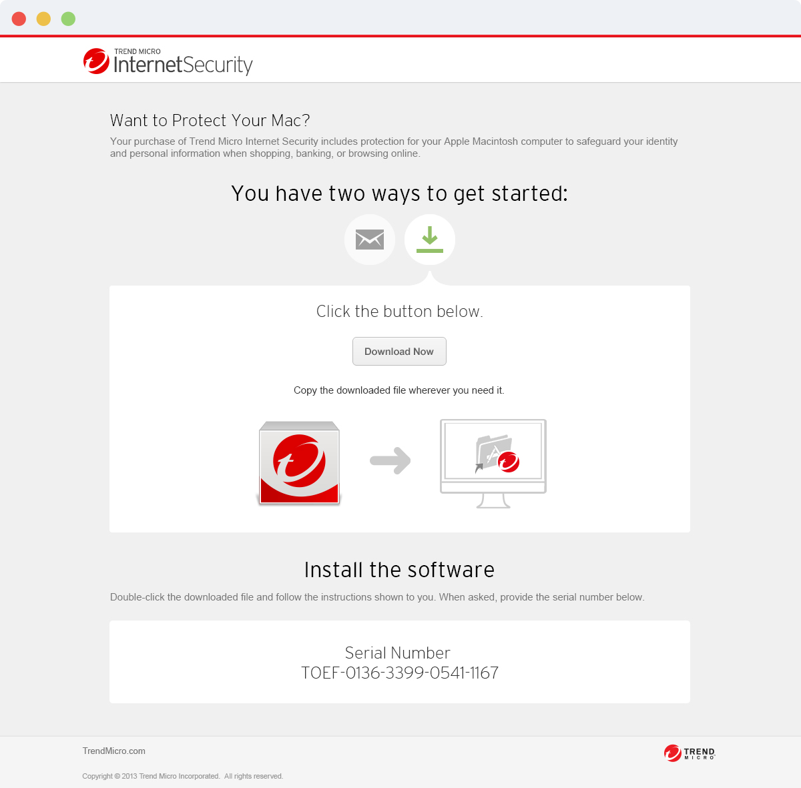
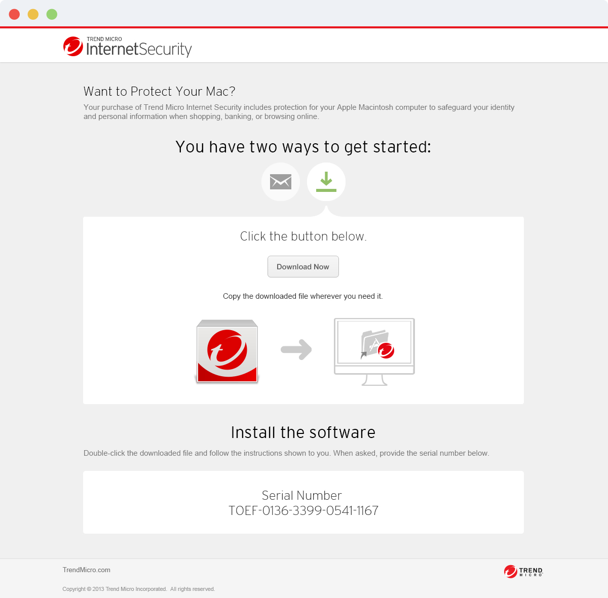

2015 Ruby Conference in Taiwan
I'm very proud to announce that Ruby Conf website just completed recently. Check out the responsive website here : http://2015.rubyconf.tw. My very first challenge was making an awesome landing page to design one of the most important development conferences in Taiwan. Apart from ending up with an amazing illustration + landing page + mobile view design + prototype + animation + communication, we worked got to collaborate a lot… and I think that was the best part of this whole project.

Platinum Support Portal @Trend micro
Support portal have three key functions - Leverage community data to shorten support handling time - Derive collective intelligence to make recommendations (/ Highlight anomalies) - A minute saved is money earned - Project on behance : http://j.mp/1FMToKg


Global Premium Support Portal Concept @Trend micro
Support portal is a platform that can leverage community data to shorten support handling time. It can drive collective intelligence to make recommendations for supporters and ask them some techie questions immediately. See this project on behance.


Install web page @Trend micro

 

Email newsletter @Trend micro